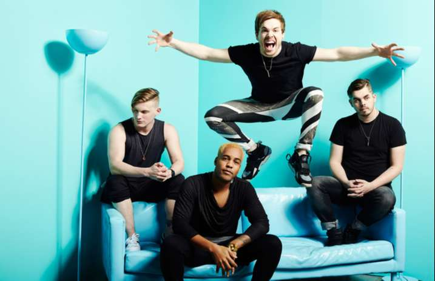

Set It Off
Set It Off (Como banda)
Set It Off es una banda americana de pop-punk/rock sinfónico creada en Tampa (Florida, EE. UU.). Ganaron seguidores a través del canal de YouTube de su cantante, Cody Carson, después firmaron con Equal Vision Records al lanzar varias canciones, una de ellas "Why Worry", lanzada hace 7 años con un gran éxito.
Historia
Cody Carson y Dan Clemont se conocieron en el instituto cuando estaban en la banda de música y se hicieron amigos. Austin Kerr y Zach Dewall estaban en otra banda antes de pertenecer a Set It Off. Llegaron a tocar algunos shows juntos mientras estaban en bandas diferentes. Cody acabó yendo a al Conservatorio de Música de Oberlin1 en Ohio. Allí grabó un vídeo para YouTube donde le pidió al cantante de All Time Low que le dejaran cantar con él una canción en el escenario, a lo que Alex Gaskarth accedió. Esto le ayudó con el sueño de empezar un grupo de rock. Dewall y Kerr fueron los primeros en seguirle, después se les unió Dan. Tuvieron varios bateristas antes de encontrar a Maxx Danziger por internet.
Influencias Musicales
Al principio, la banda era más de un género pop punk de sintetizador. Ahora, la banda ha madurado y se han definido a ellos mismos como pop punk orquestral. Sus influencias son A Day To Remember, All Time Low, Fall Out Boy, Four Year Strong, My Chemical Romance, etc
